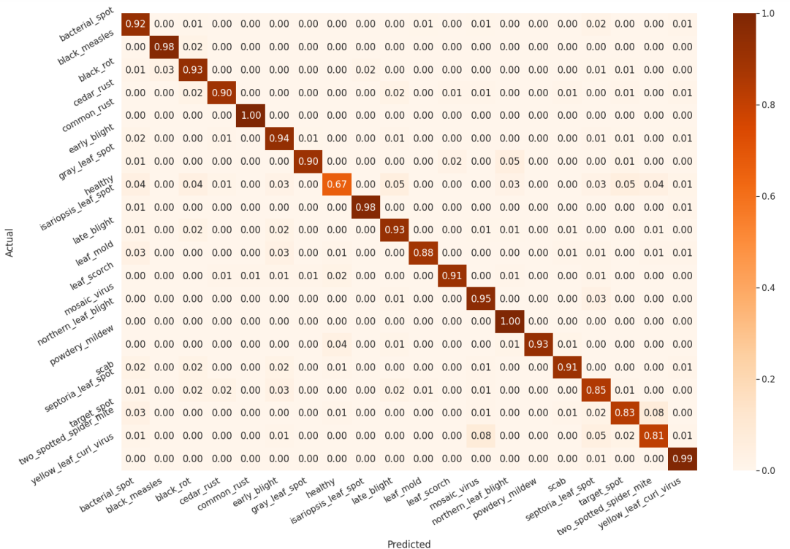

Convolutional Neural Networks (CNNs)
Convolutional Neural Networks (CNNs) are a type of algorithm used for the detection and classification of features. They are particularly effective in analyzing spatial data, such as images. CNNs employ convolutional layers to extract prominent features from images, followed by pooling to compress the feature map and prevent overfitting. These steps can be repeated multiple times to enhance the model's performance. The output is flattened and processed through fully connected neural networks. CNNs have various applications, including the detection and classification of plant infections based on leaf images.
A confusion matrix was created to assess the model's performance. The matrix reveals that the model exhibits excellent predictive capabilities with high accuracy. The strong diagonal pattern in the matrix indicates that the majority of labels were predicted correctly. This confirms the effectiveness of the model in accurately identifying and classifying the data.
